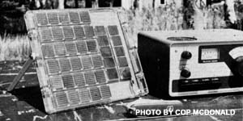

Below, Copthorne Macdonald-the inventor of slow scan television- a method of amateur radio transmission that allows ham operators to both hear and see each other during shortwave braoadcast.
Wood can always be burned for heat, and an oil or tallow blaze will provide light, but there's no substitute for electricity when it comes to powering a radio. Fortunately, it doesn't take much "juice" to keep a ham rig on the air, though ... and the little bit we do need to run a QRP (low-power) amateur rig - such as the Heathkit HW-8 described in my MOTHER NO. 47 column - can be supplied in a reasonably economical fashion by an array of silicon solar cells.
Other people have also seen this as a natural marriage of components. "Mac" McNaughton (VE3EQQ), for instance, uses a 300-ma (milliamp) panel coupled to two series-connected 6-volt wet-cell nicad batteries to power his HW-8 from Mitchell, Ontario. Also, a fellow by the name of Jack (K7ZR) sent his HW-8 with 180-ma solar array and 12-volt motorcycle battery down to last summer's NDR Workshop at Bob Hickerson's (WA6RRR's) place in Yreka, California.
My own setup is a bit more modest than Mac's or Jack's in terms of solar panel size, battery capacity, and overall cost. The "generator" panel I use-a small (1/2" X 7" X 8") unit called the "model SPM-150-16", made by Solar Systems, Inc., Highway 18 East, Dodgeville, Wis. 53533-consists of 40 series-connected 2-centimeter by 2-centimeter silicon solar cells mounted in a transparent plastic case. The panel produces up to 100 milliamps of output current during the day (depending on the cells' orientation, cloud conditions, and temperature), and is priced in the $80-$100 range.
[As of late November 1977, the SPM-150-16's exact price was $70.75 plus $2.25 postage and handling.-MOTHER.]
Since the SPM-150-16 solar array will interface with most any battery system of 16 volts or less, I decided to use a serieswired string of 12 C-size G.E. ni-cad batteries (mounted in appropriate-sized holders on the inside of my HW-8's top cover) to store my solar panel's output. This setup supplies 14 or 15 volts to the HW-8 and gives me a storage capacity of 1,000 milliampere-hours (maH) ... enough for over five hours of normal operation ' (The average current required by the HW.8 - assuming 50% "listening" time and 50% "sending" time-is about 175 milliamps.)
How much energy will the solar panel actually put into battery storage each day? Tests I made last summer indicate that during a clear day (or a hazy day with distinct shadows), the array of cells will deliver a total of 620 maH. (Or, adjusted for winter's shorter days, probably about 500 maH.) On a "cloudy-bright" day (with no distinct shadows), the numbers are 310 maH summer, and 250 maH winter ... while on a day with a heavy overcast, the summer figure goes down to 155 maH and the winter number drops to 125.
The above outputs, by the way, were obtained with the solar panel in a fixed position that would allow the solar cells to hit their maximum output at noon "sun time" (that is, when the sun is due south). Obviously, if you were to continually reposition the panel so that it always faced squarely into the sun (either by hand or with the aid of a clockwork-d riven equatorial telescope mount), all of the above numbers would be higher ... about 50% higher, in fact. (Also, it bears mentioning that the above data were obtained at a southern Canadian latitude. The numbers could be slightly different - better! - in the U.S.)
As it turns out, ni-cads are not very efficient energy storage devices, because only about 70% of the "input charge" is actually available as stored output. Even using ni-cad cells, however, I've found that a day of bright summer sun will provide the batteries in my setup with sufficient charge for 2-1/2 hours of HW-8 operating time. (A "cloudy bright" winter day delivers enough juice for one hour of operation.)
Still, if portability weren't a criterion - as it is in my case (I want to be able to keep in touch during extended wanderings far from powerlines) - a high-quality
lead-acid battery with pure lead or ca calcium-lead plates would be a better better choice than ni-cads. The lead batteries offer a better charge/discharge efficiency as well as a much higher reserve capacity to take care of long operating stretches (and long periods of cloudiness). Norm automobile batteries with antimony-lead plates are not a good choice because otheir high self-discharge rate.
A couple of final observations: [1] For my portable setup, I mounted adjustable legs on the solar panel and covered it back with a thin sheet of stiff plastic to mechanical protection. (In a permanent installation the panel would normally be screwed to a wooden or aluminum mounting plate.) [2] The solar array's 100-ma maximum power output is not high enough to damage C- or D-size ni-cad cells, even when they're fully charged. So any portable radio that uses flashlight cells of this size can be converted to solar power simply by installing the appropriate ni-cad batteries (in place of the flashlight batteries) and connecting a solar panel across the series-wired string of cells.
NOTE: When you hook the solar panel to the battery box, you'll notice that the panel has one black (negative) lead and two red (positive) leads. The red lead that's connected to the free end of the unit's built-in diode should go to the positive battery terminal, and the black lead should fasten to the negative battery terminal. The red lead that's connected to the junction of the diode and one solar cell is not used at all.
Peace,
Cop Macdonald (VE1 BFL)
99 Fitzroy St.
Charlottetown
Prince Edward Island
Canada C1 A 1 R6
New Directions Radio is an international network of radio amateurs concerned with those ways of using ham radio (and related modes of communicating) that promote our own growth as individuals, and which we perceive as helping to create a more aware, more caring, and more responsible human society. We encourage all who share these interests to work with us. A current schedule of on-the-air activities is included in each issue of the bi-monthly New Directions Roundtable Newsletter published by Randy Brink (WA7BKR) and "Bo" Bogardus W6HSE) as a service to the rest of us. Send one 13 cents stamp for each issue desired to: Randy Brink Rt. 2, Box 301B, Port Orchard, Washington 98366.
|
 |
|
|